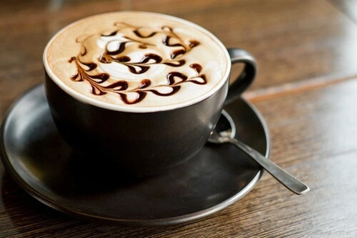

C o f f e e L o v e R
Coffee is a brewed drink prepared from roasted coffee beans, the seeds of
berries from certain
Coffea species. From the coffee fruit, the seeds are separated to produce a stable, raw product:
unroasted green coffee. The seeds are then roasted, a process which transforms them into a
consumable product: roasted coffee, which is ground into a powder and typically steeped in hot
water
before being filtered out, producing a cup of coffee.
Coffee is darkly colored, bitter, slightly acidic and has a stimulating effect in humans,
primarily
due to its caffeine content.[3] It is one of the most popular drinks in the world,[4] and can be
prepared and presented in a variety of ways (e.g., espresso, French press, caffè latte, or
already-brewed canned coffee). It is usually served hot, although chilled or iced coffee is
common.
Sugar, sugar substitutes, milk or cream are often used to lessen the bitter taste. It may be
served
with coffee cake or another sweet dessert like doughnuts. A commercial establishment that sells
prepared coffee beverages is known as a coffee shop (not to be confused with Dutch coffeeshops
selling cannabis).
Clinical research indicates that moderate coffee consumption is benign or mildly beneficial as a stimulant in healthy adults, with continuing research on whether long-term consumption reduces the risk of some diseases, although some of the long-term studies are of questionable credibility.[5] The earliest credible evidence of coffee-drinking as the modern beverage appears in modern-day Yemen from the middle of the 15th century in Sufi shrines, where coffee seeds were first roasted and brewed in a manner similar to how it is now prepared for drinking.[2] The Yemenis procured the coffee beans from the Ethiopian Highlands via coastal Somali intermediaries, and began cultivation. By the 16th century, the drink had reached the rest of the Middle East and North Africa, later spreading to Europe.
It is usually served hot, although chilled or iced coffee is common. Sugar, sugar substitutes, milk or cream are often used to lessen the bitter taste. It may be served with coffee cake or another sweet dessert like doughnuts. A commercial establishment that sells prepared coffee beverages is known as a coffee shop (not to be confused with Dutch coffeeshops selling cannabis). The two most commonly grown coffee bean types are C. arabica and C. robusta. Coffee plants are cultivated in over 70 countries, primarily in the equatorial regions of the Americas, Southeast Asia, the Indian subcontinent, and Africa. As of 2018, Brazil was the leading grower of coffee beans, producing 35% of the world total.[6] Coffee is a major export commodity as the leading legal agricultural export for numerous countries.[7] It is one of the most valuable commodities exported by developing countries. Green, unroasted coffee is the most traded agricultural commodity, and the coffee trade is the most traded commodity second only to petroleum.[8] Despite the sales of coffee reaching billions of dollars, those actually producing the beans are disproportionately living in poverty.[9] Critics also point to the coffee industry's negative impact on the environment and the clearing of land for coffee-growing and water use. The environmental costs and wage disparity of farmers is causing the market for fair trade and organic coffee to expand.[10]
Coffee
Black coffee in a cup on a saucer, with a spoon
Type Hot or ice-cold (usually hot)
Region of origin Horn of Africa[1] and South
Introduced 15th century
Color Black, dark brown, light brown
H O W I T W O R K S

Select
Grind Your Beans. It's best to use coarsely ground coffee.
Act
Combine the Coffee and Water. We make cold brew in our French press, but you can use any food-safe vessel.

BE ENLIGHTENED
Filter Your Homemade Cold Brew.
C O F F E E P R O C E S S I N G : A coffee plant usually starts to produce flowers three to four years after it is planted,[2] and it is from these flowers that the fruits of the plant (commonly known as coffee cherries) appear, with the first useful harvest possible around five years after planting. The cherries ripen around eight months after the emergence of the flower, by changing color from green to red, and it is at this time that they should be harvested. In most coffee-growing countries, there is one major harvest a year; though in countries like Colombia, where there are two flowerings a year, there is a main and secondary crop, the main one April to June and a smaller one in November to December.[3] In most countries, the coffee crop is picked by hand, a labor-intensive and difficult process, though in places like Brazil, where the landscape is relatively flat and the coffee fields are immense, the process has been mechanized.[3] Whether picked by hand or by machine, all coffee is harvested in one of two ways:
T y p e s O f C o f f e e

Borgia
There’s really not much difference in between Mocha and Borgia. What does set them apart, is what goes in the whipped cream on the top. Ideal serving: 60ml Espresso + 120ml hot chocolate + Whipped cream on the top, sprinkled with cinnamon and orange peel in a 250ml cup.

Irish
The Irish sure know to stir things up and making literally any dish or drink interesting. Ever heard whiskey in coffee? Yep! This is the one. Ideal serving: 5g (or 1 tsp.) brown sugar + 120ml French press coffee + 60ml Irish whiskey + 75ml heavy cream (in that order) in a 250ml glass.

Vienna Mocha
Or simply known as Vienna Coffee, this coffee is a fun-loving twist to your regular Espresso shot. What’s the twist, you ask? WHIPPED CREAM! Ideal serving: 60ml Espresso + Whipped cream on the top in a 150ml cup.

Frappé
One of the fanciest coffee drinks out there, and the one that contains the least amount of coffee in comparison to other items. This Starbucks favourite has to be served cold to be enjoyed.

Mocha
Ah, coffee and chocolate! The holy grail of all beverages. Nothing can go wrong with Mocha, nothing! Ideal serving: 60ml Espresso + 120ml hot chocolate + Whipped cream on the top in a 250ml cup.

Mazagran
Fancy a zingy touch to your everyday coffee? Add lemon. WHAT!? Yeah, lemon juice. Brooooo! Ideal serving: 5g (or 1 tsp.) brown sugar + 90ml French press coffee + 45ml lemon juice + Topped with ice cubes (in that order) in a 250ml glass.
W H Y C O F F E E
- Can Improve Energy Levels and Make You Smarter
- Can Help You Burn Fat
- Can Drastically Improve Physical Performance
- Contains Essential Nutrients
- May Lower Your Risk of Type 2 Diabetes
- May Protect You From Alzheimer’s Disease and Dementia
- May Lower Your Risk of Parkinson’s
- May Protect Your Liver
- Can Fight Depression and Make You Happier
- May Lower Risk of Certain Types of Cancer